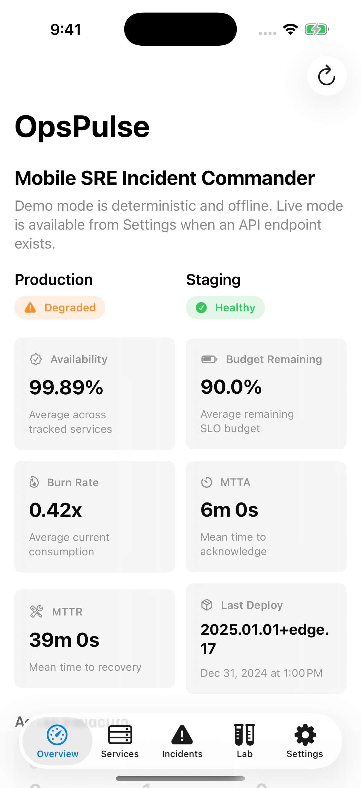
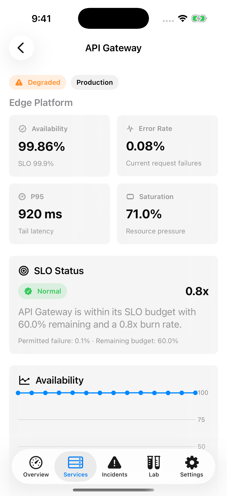
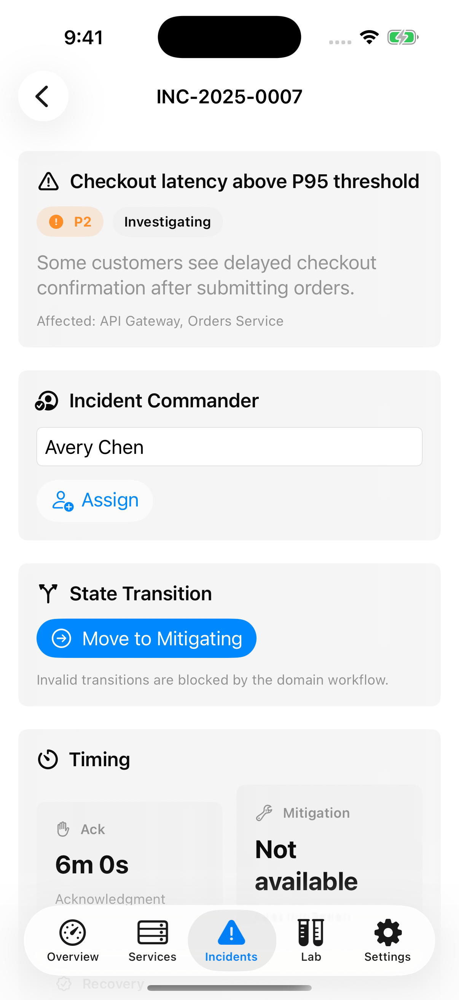

iOS | SwiftUI | SRE | Swift Testing
OpsPulse
I built a native iOS and iPadOS SRE incident commander app with deterministic service metrics, tested SLO/error-budget calculations, runbook-driven incident workflow, Reliability Lab simulations, and Markdown post-incident review export.


